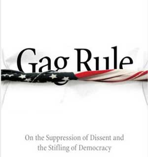

|

An Audible Silence
An excerpt from Gag Rule: On the Suppression of Dissent and the Stifling of Democracy
- - - - - - - - - -
by Lewis Lapham
The dissenter is every human being at those moments in his life when he resigns momentarily from the herd and thinks for himself.
 S A DIRECTOR of the U.S. government's ministry of propaganda during World War II, Archibald MacLeish knew that dissent seldom walks onstage to the sound of warm and welcoming applause. As a poet and later the librarian of Congress, he also knew that liberty has ambitious enemies, and that the survival of the American democracy depends less on the size of its armies than on the capacity of its individual citizens to rely, if only momentarily, on the strength of their own thought. We can't know what we're about, or whether we're telling ourselves too many lies, unless we can see or hear one another think out loud. Tyranny never has much trouble drumming up the smiles of prompt agreement, but a democracy stands in need of as many questions as its citizens can ask of their own stupidity and fear. Unpopular during even the happiest of stock market booms, in time of war dissent attracts the attention of the police. The parade marshals regard any wandering away from the line of march as unpatriotic and disloyal; unlicensed forms of speech come to be confused with treason and registered as crimes. S A DIRECTOR of the U.S. government's ministry of propaganda during World War II, Archibald MacLeish knew that dissent seldom walks onstage to the sound of warm and welcoming applause. As a poet and later the librarian of Congress, he also knew that liberty has ambitious enemies, and that the survival of the American democracy depends less on the size of its armies than on the capacity of its individual citizens to rely, if only momentarily, on the strength of their own thought. We can't know what we're about, or whether we're telling ourselves too many lies, unless we can see or hear one another think out loud. Tyranny never has much trouble drumming up the smiles of prompt agreement, but a democracy stands in need of as many questions as its citizens can ask of their own stupidity and fear. Unpopular during even the happiest of stock market booms, in time of war dissent attracts the attention of the police. The parade marshals regard any wandering away from the line of march as unpatriotic and disloyal; unlicensed forms of speech come to be confused with treason and registered as crimes.
On the morning of September 11, 2001, the terrorist attacks on New York and Washington inflicted heavy losses on the frame of the American body politic; they also severely injured -- not so obviously but no less surely -- its animating principle and spirit. By nightfall the notion of a democratic republic founded on the premise of honest and sometimes sharply pointed speech had been placed in administrative detention, suspended until further notice, canceled because of rain; in the skyboxes of the national news media, august personages were reaffirming America's long-standing alliances with God, Moses, George Washington, and the hydrogen bomb. The barbarian was at the gates; civilization trembled in the balance, and now was not the time for any careless choice of word. The next morning's newspapers called out the dogs of war.
Robert Kagan in The Washington Post: "Congress, in fact, should immediately declare war. It does not have to name a country."
Steve Dunleavy in The New York Post: "The response to this unimaginable 21st century Pearl Harbor should be as simple as it is swift -- kill the bastards... Train assassins... Hire mercenaries... As for cities or countries that host these worms, bomb them into basketball courts."
Richard Brookhiser in the New York Observer: "The response to such a stroke cannot be legal or diplomatic -- the international equivalent of mediation, or Judge Judy. This is what we have a military for. Let's not build any more atomic bombs until we use the ones we have."
Ann Coulter, in National Review Online: "We should invade their countries, kill their leaders, and convert them to Christianity."
President Bush stood suddenly revealed as a great leader, his stumbling and wooden speeches now blessed with the oratorical brilliance once ascribed to Winston Churchill and Abraham Lincoln
|
On Friday, September 14, Congress equipped President George W. Bush with the power to "use all necessary and appropriate force against those nations, organizations, or persons he determines planned, authorized, committed, or aided the terrorist attacks." Passed unanimously by the Senate, the resolution in the House of Representatives met with only one dissenting vote, from Barbara J. Lee (D.-Calif.), who said that military action could not guarantee the safety of the country and that "as we act, let us not become the evil we deplore." A correct statement of the facts joined with a decent respect for the constitutional balancing of executive and legislative power, but not an opinion in tune with an orchestra playing "God Save the King." Within an hour Representative Lee received several thousand e-mail death threats from patriots as far away as Guam. By Saturday, September 15, four days after the destruction of the World Trade Center, the nation's new set of red-white-and-blue ropelines had been placed around the perimeter of secure consensus. A choir of congressional voices gathered on the steps of the Capitol to sing "God Bless America"; President Bush stood suddenly revealed as a great leader, his stumbling and wooden speeches now blessed with the oratorical brilliance once ascribed to Winston Churchill and Abraham Lincoln; and during a series of resolute photo opportunities on various home fronts (with Billy Graham at the National Cathedral in Washington, among firemen and rescue workers in New York, with his senior advisers at Camp David), he gradually escalated the rhetorical terms of engagement from the "First War of the Twenty-first Century" to the "Monumental Struggle of Good Versus Evil."
Alive to the magnitude of the task at hand, the government busied itself over the next six weeks with the fortification of its own safety and authority, alerting the public to the chance of an attack on Disneyland or the Golden Gate Bridge, restricting the freedoms of civilian movement and expression, hiding Vice President Dick Cheney in an underground bunker in suburban Maryland, bringing up to combat strength the national reserves of xenophobic paranoia. The Pentagon issued a much-strengthened National Security Strategy, replacing the cold war theories of deterrence and containment with the strategies of "preemptive strike" and "anticipatory self-defense." On September 18 the Justice Department published an interim regulation allowing noncitizens suspected of terrorism to be detained without charge for forty-eight hours or "an additional reasonable period of time" in the event of an "emergency or other extraordinary circumstance." Asked on September 26 for comment on a possibly seditious opinion overheard on network television, Ari Fleischer, the White House press secretary, informed the correspondents at his daily press briefing, "There are reminders to all Americans that they need to watch what they say, watch what they do."
The members of Congress didn't need reminders. During the months of October and November every White House request for money or silence was met with an obedient show of hands. No points of order or objection, no memorable speech, nothing but the steady murmur of approval and the quiet hum of praise. On October 2 the Senate voted, unanimously and without debate, to fund a $60 billion missile defense system that to the best of nearly everybody's knowledge couldn't hit its celestial targets and offered no defense against the deadly weapons (smallpox virus, dynamite stuffed into a barrel of nuclear waste) likely to be hand-delivered by terrorists driving rented speedboats or stolen trucks. Senator Carl Levin (D.-Mich.), chairman of the Armed Services Committee, explained the absence of discussion by saying that in times of trouble "we have no need to create dissent while we need unity." Three weeks later on the other side of Capitol Hill, the House of Representatives passed an "economic stimulus package" that administered the bulk of the $101 billion stimulus to the wealthiest of the country's business interests. Asked about the apparent senselessness of the repeal of the corporate alternative minimum tax, Dick Armey (R.-Tex.), the House majority leader, justified the gifts ($1.4 billion to IBM, $833 million to GM, $671 million to GE, and so on) by saying, "This country is in the middle of a war. Now is not the time to provoke spending confrontations with our Commander-in-Chief."
Similar flows of sentiment stifled the asking of awkward questions when, on October 26, President Bush signed the USA PATRIOT Act, 342 pages of small print that few members of Congress took the trouble to read, but that nevertheless permitted Attorney General John Ashcroft to expand telephone and Internet surveillance, extend the reach of wiretaps, obtain warrants to review the borrowings from public libraries, and open financial and medical records to searches for suspicious behavior and criminal intent. Like the missile appropriations, the USA PATRIOT Act passed into law without a public hearing or debate, its character described by Representative Barney Frank (D.-Mass.) as "a bill drafted by a handful of people in secret, subject to no committee process... immune from amendment." In the event that all present might not be familiar with the new and revised edition of the Constitution, Attorney General Ashcroft appeared before the Senate Judiciary Committee on December 6 to say, "To those who scare peace-loving people with phantoms of lost liberty, my message is this: your tactics only aid terrorists, for they erode our national unity and diminish our resolve. They give ammunition to America's enemies and pause to America's friends."
America's friends weren't slow to take their cues. During the first week of the country's abruptly revoked special arrangement with Providence (the land of the free and the home of the brave no longer preserved from harm by the virtue of its inhabitants and the grace of its geography), hundreds of thousands of American flags appeared in store windows, at bridge crossings, on the fenders of city limousines and country pickup trucks; "out of respect to visitors' sensibilities," officials at the Baltimore Museum of Art removed from exhibition a painting entitled Terrorist; by a vote of 200 to 1 the Pennsylvania House of Representatives passed a bill requiring the state's public schools to begin every day's classes with a recitation of the Pledge of Allegiance or the singing of the national anthem; in the midst of delivering a commencement address in Sacramento, California, one of that city's prominent newspaper publishers was forced off the stage for saying that the events of September 11 might call upon the American people to decide which of their civil liberties they were willing to give up "in the name of security"; in Washington, D.C., the American Council of Trustees and Alumni (ACTA) published a guide to the preferred forms of free speech under the title Defending Civilization, the authors of the pamphlet being careful to make their curtsy to "the robust exchange of ideas" so "essential to a free society," before going on to say that the nation's universities-- all the nation's universities -- had failed to respond to the provocations of September 11 with a proper degree of "anger, patriotism and support of military intervention." As evidence for its assertions the guide offered a list of 115 subversive remarks culled from college newspapers, or overheard on university campuses by the council's vigilant informants during the fifty-one days between September 14 and November 4.
 Next page | The national news and entertainment media realized that dissent was bad for business as well as un-American and wrong Next page | The national news and entertainment media realized that dissent was bad for business as well as un-American and wrong
1, 2, 3, 4
|